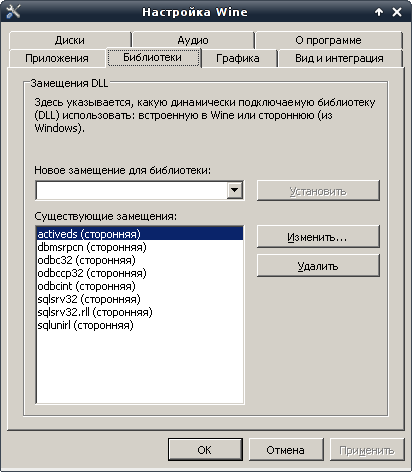
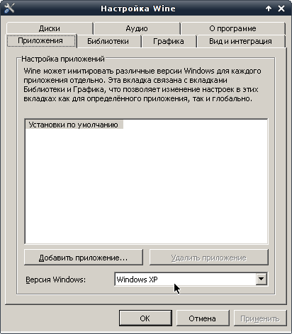
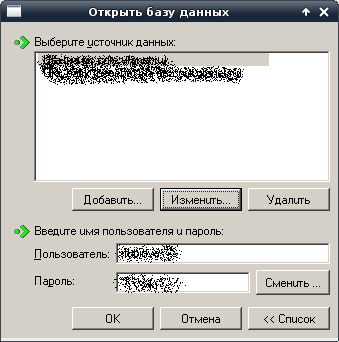
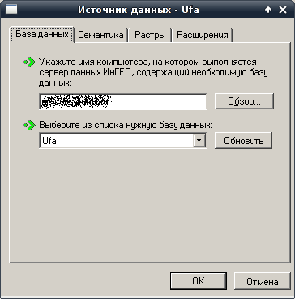
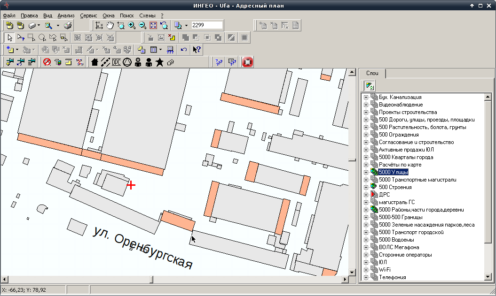

Клиента ИнГео можно запустить под Wine, однако следует иметь ввиду, что нормально в Wine работают только версии ИнГео начиная с 4.4. Поэтому стоит сразу скачать подходящую версию на официальном сайте, на странице по ссылке: http://www.integro.ru/dl/ingeo/ingeo44/
После установки wine нужно запустить его настройку по команде winecfg и перейти на вкладку "Библиотеки":
Необходимо добавить замещения для библиотек, изображённых на скриншоте, указав, что должны использоваться сторонние библиотеки:
Теперь можно установить MDAC (берётся на сайте MS, прямая ссылка: http://download.microsoft.com/download/2/e/d/2ed44410-0644-4021-8001-a2496f2889eb/MDAC_TYP.EXE)
Если MDAC не захочет устанавливаться, то в wine нужно выставить версию "Windows 95", установить MDAC и снова вернуть версию "Windows XP":
Осталось выполнить настройку самого клиента ИнГео (мой сервер ИнГео использует СУБД MS SQL Server, поэтому дополнительной настройки ODBC-драйвера не требуется):
 В итоге получаем работающую систему:
